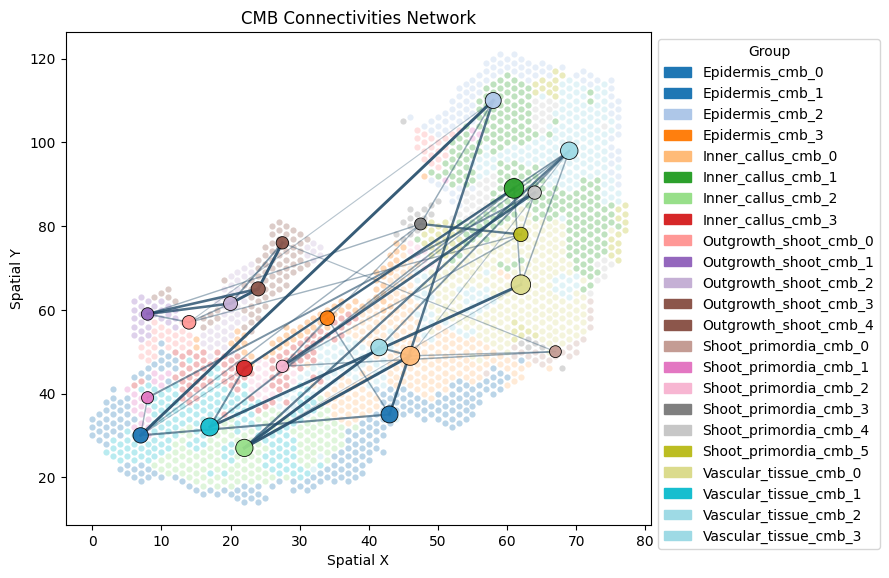
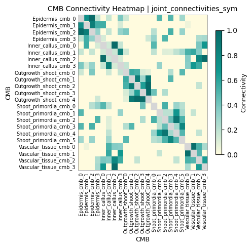
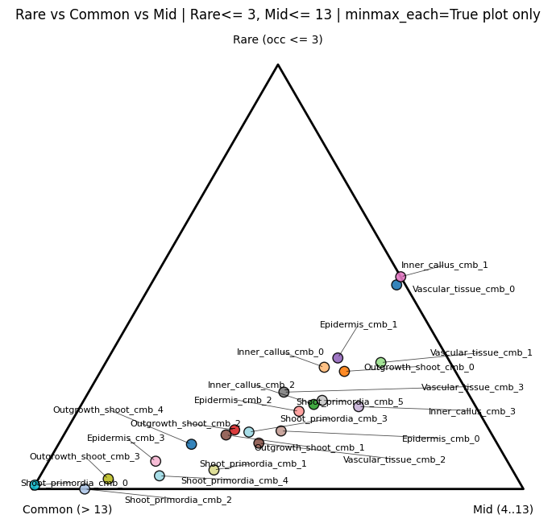
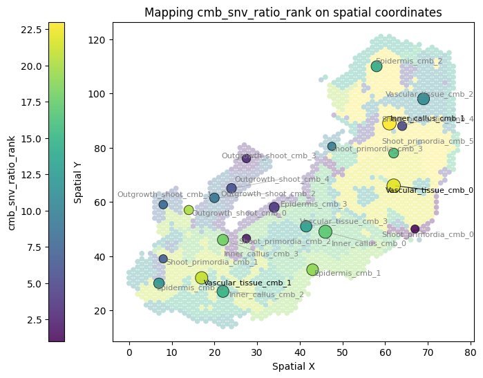
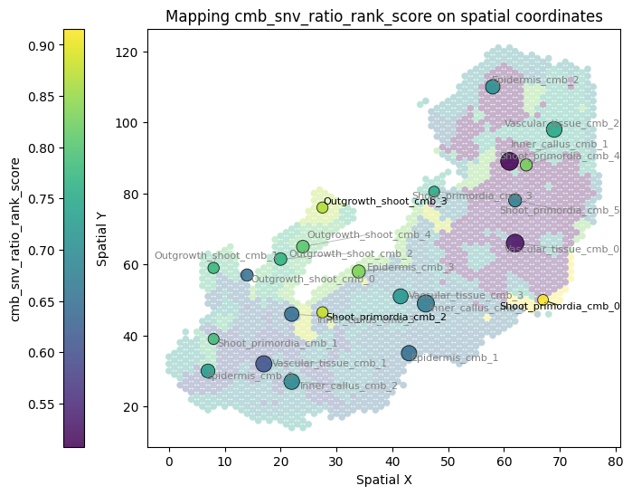
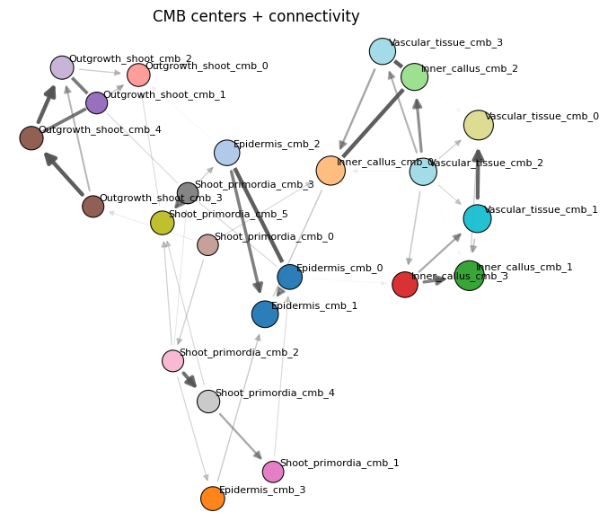

Cell lineage inference with SNV and gene expression profiles
In this tutorial, we will use a real dataset from Song et al. (PNAS, 2023) to infer cell lineages. This processed dataset can be downloaded from Baidu Netdisk.
import sys
from pathlib import Path
import numpy as np
import pandas as pd
import scanpy as sc
import scipy.sparse as sp
from anndata import AnnData
import anndata as ad
from kneed import KneeLocator
import matplotlib.pyplot as plt
sys.path.insert(0, str(Path("/home/path/linemut/src/linemut_build/"))) # The path to LineMut Build scripts
from processData import combine_ratio_depth
from processData import filter_snv_by_depth_ratio
from processData import ternary_cmb_snv
from constructNJ import revise_snv_ratio
from plotCMBs import plot_cmb_cent
from plotCMBs import plot_obs_with_cmb_cent
from plotCMBs import plot_cmb_conn
from plotCMBs import plot_cmb_cent_vector
from mergeSnvExp import group_meanexp_pca
from mergeSnvExp import align_two_adatas_by_obs
from mergeSnvExp import build_joint_neighbors_graph_fusion
These files are needed to generate cell lineage:
adatas of SNV: Ratio and depth information of CMB * SNV in h5ad files
adata of gene expression: Gene expression h5ad files
coor: Original cell coordinate file with 3 columns (cell, x, y) and no header
cmb_info: Cell CMB group annotation with 2 columns (cell, group) and no header
Load and combine data
ad_ratio = ad.read_h5ad("Dataset1/unit_ratio.h5ad")
ad_depth = ad.read_h5ad("Dataset1/unit_depth.h5ad")
adata = combine_ratio_depth(ad_ratio, ad_depth)
Load spot coordinates and respective CMB labels
coor1 = pd.read_csv('../02.Tomato_callus/data/10x_data/10x_cells_coor.csv', header = None, names = ['cell', 'x', 'y'], index_col = 0)
cmb_info1 = pd.read_csv('../02.Tomato_callus/data/choosing_alpha_for_CMB/10x_k_selection_result_weight0.80/27_mer/cellmetabin.csv', header = None, names = ['cell', 'group'], index_col = 0)
coor1[['x','y']] = coor1[['x','y']].apply(pd.to_numeric, errors='coerce')
df1 = coor1.join(cmb_info1, how='inner')
cmb_agg1 = df1.groupby('group').agg(x_center=('x','median'), y_center=('y','median'), n_cells=('x','size')).reset_index()
adata.obs = adata.obs.join(cmb_agg1.set_index('group')[['x_center','y_center','n_cells']], how='left')
Obtain the PC elbow of gene expression profile
adata1_exp = ad.read_h5ad("Dataset1/Gene_exp.h5ad")
adata1_exp.obs = adata1_exp.obs.join(cmb_info1, how="left")
adata1_MeanExp = group_meanexp_pca(adata1_exp, group_key="group", do_normalize_log=True, do_scale=True, n_comps=22)
# Detect elbow for CMB mean expression PCs
explained_var = adata1_MeanExp.uns['pca']['variance_ratio']
explained_var_cum = explained_var.cumsum()
# Detect elbow point
kl = KneeLocator(range(1, len(explained_var)+1), explained_var, curve="convex", direction="decreasing")
elbow_PC = kl.elbow
print(elbow_PC) # PC elbow of gene expression profile
5
Combine SNV and gene expression
### SNV PCs (elbow at 4, calculated in previous analysis)
adata1_SNV = filter_snv_by_depth_ratio(adata, min_tot_depth=20, min_mut_depth=5, min_mut_avg_ratio=0.1)
adata1_SNV = revise_snv_ratio(adata1_SNV)
sc.pp.pca(adata1_SNV)
adata_snv, adata_exp = align_two_adatas_by_obs(adata1_SNV, adata1_MeanExp, how="inner", base="a")
SNV number before filter: 98563
SNV number after filter: 21708
Calculate and plot joint connectivities
Calculate connectivities
adata_joint = adata_snv.copy()
adata_joint.obsm["X_snv_pca"] = np.asarray(adata_snv.obsm["X_pca"])
adata_joint.obsm["X_rna_pca"] = np.asarray(adata_exp.obsm["X_pca"])
w = build_joint_neighbors_graph_fusion(adata_joint,
rna_rep="X_rna_pca", snv_rep="X_snv_pca", rna_n_pcs=5, snv_n_pcs=4,
n_neighbors=5, adaptive_wnn_like=True, key_added="joint")
adata_joint.obs["group_cmb"] = adata_joint.obs_names.astype("category")
Plot connectivities
plot_cmb_conn(adata_joint, coor1, cmb_info1, cell_size=20, show_group_legend=True,
cell_alpha=0.3, show_labels=False, plot_heatmap=True, edge_quantile=0.5)


{'main': (<Figure size 900x600 with 1 Axes>,
<Axes: title={'center': 'CMB Connectivities Network'}, xlabel='Spatial X', ylabel='Spatial Y'>),
'heatmap': (<Figure size 500x500 with 2 Axes>,
<Axes: title={'center': 'CMB Connectivity Heatmap | joint_connectivities_sym'}, xlabel='CMB', ylabel='CMB'>)}
Use a ternary plot to calculate and visualize SNV types
ternary_cmb_snv(adata_joint, rare_max_occ=3, mid_max_occ=13, color_by="group_cmb", minmax_each=True, show_labels=True, show=True,)
Looks like you are using a tranform that doesn't support FancyArrowPatch, using ax.annotate instead. The arrows might strike through texts. Increasing shrinkA in arrowprops might help.

(<Figure size 700x700 with 1 Axes>,
<Axes: title={'center': 'Rare vs Common vs Mid | Rare<= 3, Mid<= 13 | minmax_each=True plot only'}>)
Plot CMB SMV rank or rank scores
plot_obs_with_cmb_cent(adata_joint, coor1, cmb_info1, cell_colors_by_obs=True, group_by = "cmb_snv_ratio_rank")
plot_obs_with_cmb_cent(adata_joint, coor1, cmb_info1, cell_colors_by_obs=True, group_by = "cmb_snv_ratio_rank_score")


(<Figure size 900x600 with 2 Axes>,
<Axes: title={'center': 'Mapping cmb_snv_ratio_rank_score on spatial coordinates'}, xlabel='Spatial X', ylabel='Spatial Y'>)
Plot connectivity network
fig, ax = plot_cmb_cent_vector(
adata_joint, coor1, cmb_info1, figsize=(8,6),
plot_on="Network", spatial_max_dist_quantile=0.5, top_conn_percentile=0.5,
show=True)
